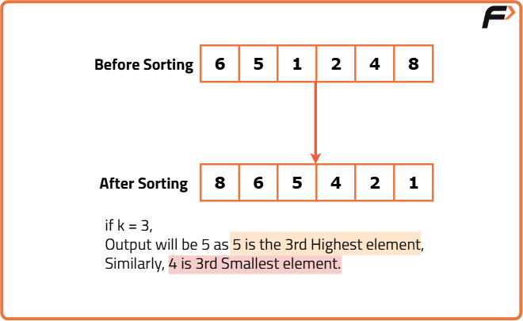
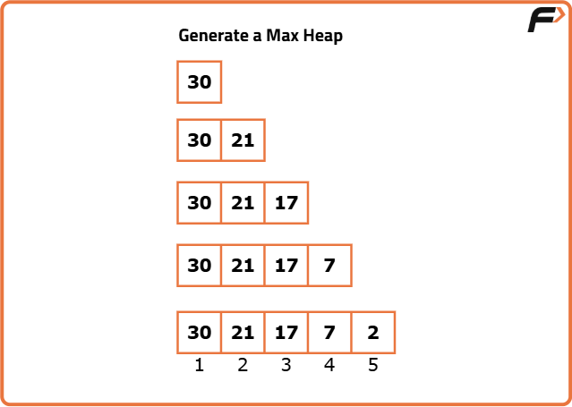
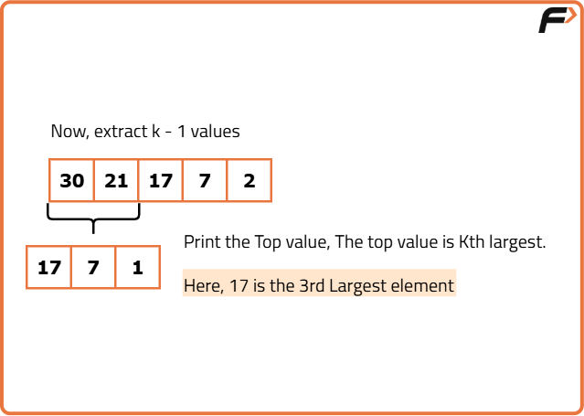

Kth largest/smallest element in an array
Problem Statement: Given an array nums, return the kth largest element in the array.
Examples
Example 1: Input: nums = [1, 2, 3, 4, 5], k = 2 Output: 4 Explanation: The 2nd largest number in the list [1, 2, 3, 4, 5] is 4. Example 2: Input: nums = [-5, 4, 1, 2, -3], k = 5 Output: -5 Explanation: The 5th largest number in the list [-5, 4, 1, 2, -3] is -5.
Disclaimer: Here is the practice link to help you assess your knowledge better. It's highly recommend trying to solve it before looking at the solution.
Brute Force
Algorithm
- Maintain a min-heap of size K to store the K largest elements encountered so far.
- Insert the first K elements from the input into the min-heap.
- For each remaining element in the input:
- If the element is greater than the smallest element in the heap (the root of the min-heap), remove the smallest element from the heap and insert the new element.
- After processing all elements, the root of the min-heap will contain the Kth largest element, which is returned.

Code
#include <bits/stdc++.h>
using namespace std;
class Solution {
public:
// Function to get the Kth largest element
int kthLargestElement(vector<int>& nums, int k) {
// Min-heap data structure
priority_queue <int, vector<int>, greater<int>> pq;
// Add the first K elements in the Min-heap
for(int i = 0; i < k; i++) pq.push(nums[i]);
// Process the rest of the elements
for(int i = k; i < nums.size(); i++) {
// Check if a new larger element is found
if(nums[i] > pq.top()) {
pq.pop(); // remove the smallest from the min-heap
// Add the current element to the min-heap
pq.push(nums[i]);
}
}
return pq.top(); // Return the kth largest element
}
};
// Driver code
int main() {
vector<int> nums = {-5, 4, 1, 2, -3};
int k = 5;
// Creating an object of the Solution class
Solution sol;
// Function call to get the Kth largest element
int ans = sol.kthLargestElement(nums, k);
// Output array
cout << "The Kth largest element in the array is: " << ans << endl;
return 0;
}Complexity Analysis
Time Complexity: O(N * log K), where N is the size of the given input array. Traversing the array takes O(N) time, and for each element, in the worst case, we perform heap operations which take O(log K) time. Note that K can be equal to N in the worst case, making the worst-case time complexity as O(N * log N).
Space Complexity: O(K), as a Min-heap data structure of size K is used to store the K largest elements.
Optimal Approach
Algorithm
- Choose a random index within the current search range as the pivot to avoid worst-case time complexity.
- Partition Around the Pivot:
- Swap the pivot element with the leftmost element to simplify the partitioning process.
- Move elements greater than the pivot to the left portion of the array.
- Move elements smaller than or equal to the pivot to the right portion of the array.
- Place the pivot in its correct position, ensuring all larger elements are on its left and all smaller ones are on its right.
- If the pivot index matches
k-1, the element at this index is the Kth largest and is returned as the answer. - If the pivot index is greater than
k-1, search continues in the left portion of the array. - If the pivot index is less than
k-1, search continues in the right portion of the array. - The process continues until the Kth largest element is found.


Code
#include <bits/stdc++.h>
using namespace std;
class Solution {
public:
// Function to get the Kth largest element
int kthLargestElement(vector<int>& nums, int k) {
// Return -1, if the Kth largest element does not exist
if(k > nums.size()) return -1;
// Pointers to mark the part of working array
int left = 0, right = nums.size() - 1;
// Until the Kth largest element is found
while(true) {
// Get the pivot index
int pivotIndex = randomIndex(left, right);
// Update the pivotIndex
pivotIndex = partitionAndReturnIndex(nums, pivotIndex, left, right);
// If Kth largest element is found, return
if(pivotIndex == k-1) return nums[pivotIndex];
// Else adjust the end pointers in array
else if(pivotIndex > k-1) right = pivotIndex - 1;
else left = pivotIndex + 1;
}
return -1;
}
private:
// Function to get a random index
int randomIndex(int &left, int &right) {
// length of the array
int len = right - left + 1;
// Return a random index from the array
return (rand() % len) + left;
}
// Function to perform the partition and return the updated index of pivot
int partitionAndReturnIndex(vector<int> &nums, int pivotIndex, int left, int right) {
int pivot = nums[pivotIndex]; // Get the pivot element
// Swap the pivot with the left element
swap(nums[left], nums[pivotIndex]);
int ind = left + 1; // Index to mark the start of right portion
// Traverse on the array
for(int i = left + 1; i <= right; i++) {
// If the current element is greater than the pivot
if(nums[i] > pivot) {
// Place the current element in the left portion
swap(nums[ind], nums[i]);
// Move the right portion index
ind++;
}
}
swap(nums[left], nums[ind-1]); // Place the pivot at the correct index
return ind-1; // Return the index of pivot now
}
};
// Driver code
int main() {
vector<int> nums = {-5, 4, 1, 2, -3};
int k = 5;
// Creating an object of the Solution class
Solution sol;
// Function call to get the Kth largest element
int ans = sol.kthLargestElement(nums, k);
// Output array
cout << "The Kth largest element in the array is: " << ans << endl;
return 0;
}Complexity Analysis
Time Complexity: O(N), where N is the size of the given array.
In the average case (when the pivot is chosen randomly):
Assuming the array gets divided into two equal parts, with every partitioning step, the search range is reduced by half. Thus, the time complexity is O(N + N/2 + N/4 + ... + 1) = O(N).
In the worst-case scenario (when the element at the left or right index is chosen as the pivot):
In such cases, the array is divided into two unequal halves, and the search range is reduced by one element with every partitioning step. Thus, the time complexity is O(N + N-1 + N-2 + ... + 1) = O(N2). However, the probability of this worst-case scenario is negligible.
Space Complexity: O(1), as we are modifying the input array in place and using only a constant amount of extra space.